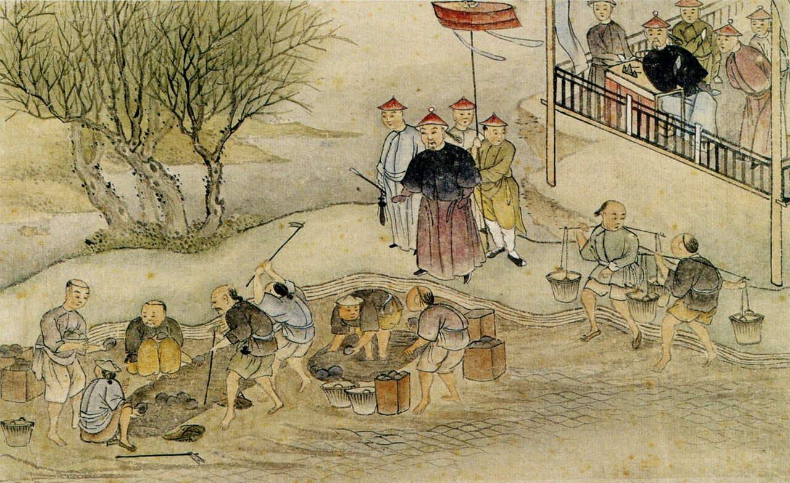
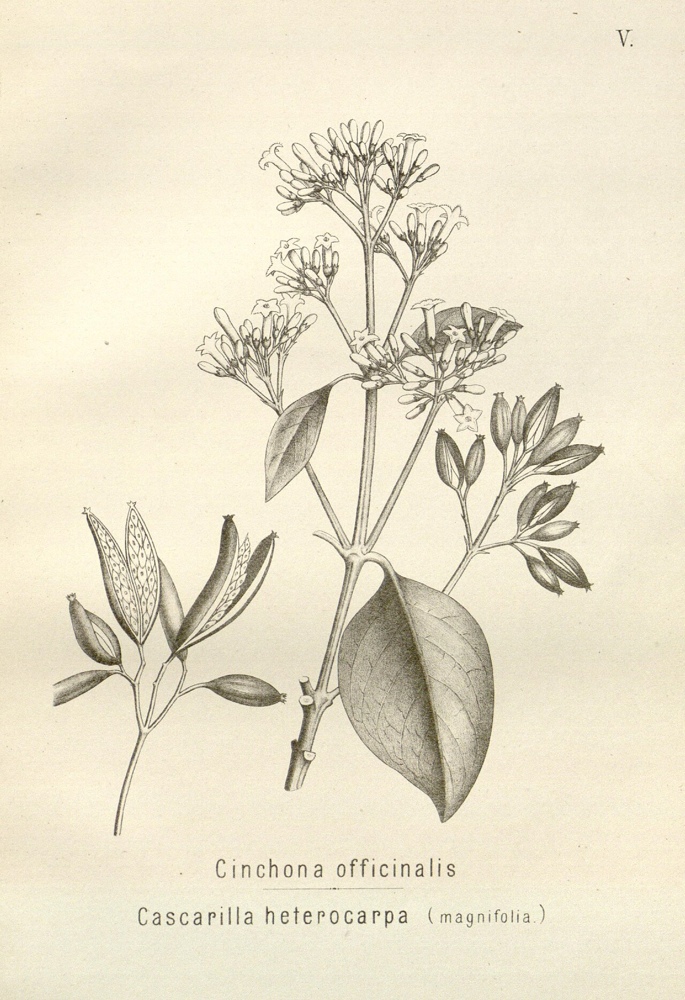

Chapter Eight
1839
"The chests are marked Patna and Benares. No one at the Custom House asks what becomes of them after Lintin."
— Canton merchant's letter book, 1839
1839: What Pemberton Called Trade

Chapter Sections
I. A Smell Underneath
Some evenings the wind off the river carries a smell that has no business being sweet. Underneath the tar and the mud and the sewage — something cloying, almost pleasant, if a man didn't know what it was. By 1839 the Company is moving something close to forty thousand chests of processed opium out of Bengal and Bombay in a single year. Over two thousand tons, grown on land that used to grow rice. The smell of it drifts over London some nights the way other cities smell of baking bread.
The bar is busier than it used to be, and the men in it have changed kind, not just face. Sailors still here, hunched over their ale. Dockworkers still arguing about wages. But new men too, better coats, watches, talking about China and Bengal the way other men talk about a good investment. They don't look like sailors or soldiers. They look like men who make money arranging for other people to do the work.
A ship passes the window. Then another. Then three more, heading downriver, sitting deep and loaded. The men at the bar glance up — the look of men who know exactly what's in those holds and are pleased about it.
Last autumn a different ship went by, going the other way, and the whole bar came to the window for her: the Temeraire — the old Fighting Temeraire, ninety-eight guns, Trafalgar — dismasted, dead, under tow to the breakers at Rotherhithe behind a steam tug half her length. Nobody spoke while she passed. Sail hauled to the knacker's by smoke: every man at this window knew exactly what he was looking at, and not one of them could have said it aloud. A painter got it down, they say, from somewhere along this reach — got the sunset in behind her like a funeral the sky had agreed to hold. The bar has not seen the picture. The bar saw the ship.
Behind the bar's regular business, a card game two tables over tips suddenly physical — a disputed deal, a shove, a stumbled step backward into a table that catches the falling man across the shin instead of anything softer. By the time the argument's settled the table's back leg has gone from merely old to permanently wrong, cracked at the joint. Someone wedges a folded receipt under it before the night's out, and nobody gives it a second thought.
II. The Supercargo
He comes in on a night the smell's stronger than usual — a ship's in close from Calcutta somewhere. Not a big man, not small. Precise. Clean boots, clean hands, the look of someone who's never done manual labour and is proud of it.
He orders wine.
Wine. Hannah pauses half a second, which for Hannah is a long time, then finds a bottle and pours without comment. She's seen everything. This barely registers.
His name is Pemberton, learned from the talk that builds around him the way talk builds around men like this. Supercargo — the merchant on board a ship, not the captain, not the mate. Knows what's in the hold, what it cost, what it sells for. On Pemberton's ship, what's in the hold is opium.
He says the word easily. The way a butcher says beef.
Three voyages, he tells the bar in general. Three to Canton and back, each one more profitable than the last. The market's insatiable. We can't grow enough of it. Finest article of trade I've ever handled.
He means it. To Pemberton the opium is a very good product that a great many people want. What it does to the people who buy it is not part of the calculation, or it's a calculation he's decided not to run.
III. The Triangle
Someone asks how it actually works — not what it is, how. Wapping men understand systems, tides, wages, ships, and they respect a well-built one when they hear it described. Pemberton leans back, pleased at the question, and traces a triangle in the spilled ale on the bar with one finger.
The Company grows the opium, he says. Controls the poppy fields in Bengal — doesn't own them, controls them. Tells the peasants what to plant. Not asked. Required. And when the peasants say, if we grow poppy we can't eat, the Company says that isn't its concern.
Behind him someone laughs too loud at a joke that has nothing to do with any of this, and a woman's voice tells him to keep it down, some of us are trying to hear the gentleman.
Doesn't smuggle it into China itself, mind, Pemberton continues. Too respectable for that. Processes it into balls at Patna, ships it to Calcutta, sells it at auction. Clean. Legal. What the buyer does with it after is his own affair.
A man near the bar laughs — a short, knowing sound. He understands. Everyone at the bar understands.
And then the silver comes back, Pemberton says, tracing the second line of his triangle. Chinese pay in silver, and the Company takes it and buys tea with it. That's the whole point. Britain drinks tea the way this bar drinks ale, and the Chinese don't want anything else we make — not wool, not cloth, not machinery. Just silver. And Britain was running out of it, until the poppy.
He waves a hand. Everyone's happy. Except —
He doesn't finish the sentence. Doesn't need to. It dissolves into the noise of the bar, the way most things men don't want to think about eventually do.
There's Malwa too, he adds, almost as an afterthought. Company doesn't even grow that one — just taxes it passing through Bombay. Profits from opium it never touched. That's the beauty of the thing.
He drinks his wine, pleased with himself and the shape of what he's built. Somewhere in Bengal a peasant is standing in a poppy field looking at flowers he didn't choose to grow. He isn't in this bar. The triangle doesn't have a point for him.
IV. The Shaking Man

He comes in like a man who's been pushed, though nobody's touched him — the posture of someone who's been under pressure so long his body doesn't know what to do without it. Thin. Coat hanging off him. His hands shake, not the fine tremor of too much coffee but something deeper, radiating out from the centre of him.
He sits at the far end from Pemberton. Orders gin. His name is Hale — Dr Hale, naval surgeon, three years stationed off Canton.
Gin and bark, he says to Hannah when she pours — and then, because the joke stopped being one somewhere off Canton, he makes it literal: from a waistcoat pocket, a paper twist of grey-brown powder; a pinch into the gin; a stir with the blade of a pocket-knife wiped first on his sleeve. Peruvian bark. In the fever ports the surgeons dose every man with it against the ague, and the bark is so bitter the men will risk the fever instead, so it goes down dissolved in spirits and sugar until it consents to be swallowed.
The docker on the next stool asks, warily, what the powder is. Hale slides the glass across instead of answering. Taste it.
The docker tastes it, and his face folds like wet paper. Christ, he says, with reverence.
Quite, Hale says, taking the glass back. That's the Company's other plant. The poppy for its customers; the bark for its servants. Consider which of the two it troubles to make swallowable. Then he begs the heel of a lime off Hannah's punch makings and squeezes it in — against the scurvy, he says, and against the taste, which needs more help than the scurvy does — and drinks, and doesn't wince, which is its own small piece of testimony.
Gin, bark, lime. The entire pharmacopoeia of empire assembled in one glass in a Wapping bar, twenty years before anyone thinks to sell the bitter part fizzing in bottles and give the whole thing a name.
It is in the same flat, inventoried voice that Hale gives the room, unasked, the one good memory he brought home. Ashore in Canton he watched three drunk sailors off a receiving ship start trouble in a factory lane — the kind of trouble that ends with somebody opened up — and watched it ended instead by an old man, small, past sixty, a teacher of the neighbourhood boys, who put all three of them on the ground in less time than it takes to tell it, without anger, almost without moving. And then knelt, and set the wrist he had broken doing it, because he was also the lane's bonesetter, and splinted it with a folded fan and two strips torn off his own hem. The gentlest violence I ever saw, Hale says, into his gin. The whole lane called him master.
The lane he is remembering has less than two years left before the gunships find its river. Nobody in this room knows that yet, and the old master least of all.
He says nothing for a while, listening to Pemberton down the bar going on about auction prices and this year's Patna crop against last year's. His jaw tightens.
Twelve and a half million, he says.
The number drops into the bar like a stone into still water. Pemberton stops talking.
Twelve and a half million Chinese, addicted. The imperial censor's own estimate. Men, women — children, God help them, lying on floors in rooms that smell exactly like this one does tonight.
Pemberton sets down his wine and looks at him with the recognition of a man meeting a familiar type. You're a surgeon, he says. Not a question.
Three years in Canton. I treated the sailors on the receiving ships. And I went ashore. I saw what your product does.
My product, Pemberton says, almost smiling. I don't have a product. I have a cargo. I move things from one place to another. What happens after isn't—
Twelve and a half million, Hale says again, and does not let the sentence finish. Birth rates collapsing in the worst districts. Children born addicted who don't live a month. A country coming apart at the seams, and you're sitting here talking about margins.
The bar's gone quiet — not silent, just listening, the way a room listens when it's deciding what to do with what it's heard. Hale's hands are shaking worse now. Gin never helps with this kind of shaking. Nothing does.
V. The Woman at the Window
She comes in and the air shifts — the way it does when someone enters who doesn't belong and knows it and has come anyway because there's nowhere else left to go. Chinese. Small, still, standing just inside the door.
She's not young, not old. Her face has settled into the geometry of worry. No coat suited to English weather; it's autumn and the river wind comes straight through the glass.
She moves to the window, not the bar. Hannah approaches, asks if she can help. The woman answers in a language that isn't English, then, slow and careful:
My husband. Company ship.
Four words, carefully chosen. It's all the English she means to spend on a barkeep who couldn't give her what she needs even with the whole language at her disposal — Mei has more of it than that, saved up the way a woman saves a little money nobody knows about, for when it will actually buy something. She shows Hannah a letter, worn soft from handling — a husband last seen boarding a Company vessel in Canton two years ago, bound for London, a cargo of tea and a promise to return.
She watches the river the way you watch a door you're expecting someone through. Tracks every ship from the moment it appears to the moment it's gone round the bend. She has crossed an ocean to stand in a bar and look for one face on one deck, and the odds of finding it are close enough to nothing that nobody in the room says so out loud.
The bar goes quiet around her without anyone asking for quiet. Pemberton. Hale. The loud men at the back. Her silence carries further than anything said in this room all evening.
VI. The Argument
The quiet breaks because Pemberton can't stand it. He's a man who fills rooms with talk, and this room has no space left for him. He turns back to Hale, picking up the argument the woman interrupted.
It's legal, he says. The Company grows a product and sells it at public auction. What the buyers do after that is their business. We don't ship it to China. Private vessels do.
You sold it to them, Hale says. You grew it, processed it, auctioned it, knowing exactly where it was going and what it would do when it got there. And you sit here calling it legal.
It is legal. Under English law, under Company charter. The dividends go to shareholders who happen to sit in Parliament, and none of them are asking questions, because the income's excellent and the source is, as I say, legal.
Legal. Hale says the word like it's gone dead in his mouth. The Chinese have banned it. Repeatedly. Imperial edict after edict. And your answer is: that's your law, not ours.
Pemberton shrugs — a practised shrug, the shrug of a man for whom the world is complicated and he is simply a practical part of it. Chinese want our silver, not our goods. Opium fixed the balance. No opium, no tea. No tea, no trade. No trade, no Company. No Company —
I follow the chain, Hale cuts in. It ends in a room in Canton with a man on a mat and a pipe in his mouth who hasn't eaten in four days, and his children starving in the street outside. That's where your chain ends, Pemberton.
Pemberton opens his mouth. Closes it.
It's at this point that Mei leaves the window.
Nobody has looked at her directly all evening — the room has arranged itself around her silence without quite acknowledging it, the way people accommodate a piece of furniture — and so nobody quite registers her crossing the floor until she's standing close enough to Pemberton that he has to look down to find her.
Lintin, she says.
Pemberton blinks. I beg your pardon.
Lintin, she says again, and this time she says more, in her own language, fast and low, words that mean nothing to anyone else in the room, though the shape of them — grief worn down into something closer to accusation — needs no translating at all. Then, slower, in English assembled with care rather than fluency, each word set down like a stone she's testing before she puts her weight on it: My husband. Ship go Lintin. Two year. No letter. You. Opium. You know.
The bar has gone very quiet. Pemberton, for once all evening, does not have a shrug ready.
I don't know your husband, madam, he says, and it might even be true, and it changes nothing about the way she's looking at him.
You know the ship, she says. You know Lintin. You know receiving ship. She says the last two words with particular care, the way Hale said them not five minutes before, and the room understands, in the same half-second Pemberton does, that she's been standing at that window listening to every word of an argument he thought was between two Englishmen, and has done, in her own head, the same arithmetic he traces so easily in spilled ale on a bar top — a ship, a cargo, a habit, a silence where a husband used to be.
I sell opium at auction in Calcutta, Pemberton says, and there is, for the first time tonight, something in his voice that isn't quite performance. What happens to it after leaves my hands. I have never set foot on a receiving ship at Lintin in my life.
But you know what happens on them, she says. Not a question.
Pemberton doesn't answer that. It is, everyone in the room seems to understand at the same moment, the closest thing to an answer he has left in him tonight.
Mei holds his eyes a moment longer than is comfortable for either of them, then turns and walks back to the window — not because she's finished, but because there's nothing further this particular room can give her. She has said what she came to say to the one man in it who might actually have known enough to answer, and he has told her, in the only language that matters, that he does.
There's talk in Parliament, a Company man at the bar says — good coat, a watch, been listening and decided to join in. They're sending an envoy. Commissioner Lin. Already seized stock in Canton.
Twenty thousand chests, Hale says. Seized and destroyed. Dumped in the river. And the Chinese aren't apologising for it.
There'll be a war, the Company man says, calm as weather. You can't seize British property and expect nothing.
British property, Hale repeats. Opium. Seized from smugglers with no legal right to sell it in the first place. And you'll send gunships over it. Fire on their ports. Kill people to protect your right to sell them poison.
The Company man shrugs — the same shrug Pemberton used, like it's taught somewhere. It's the way of the world, he says.
Hale looks at him. At Pemberton. At the window, where the woman still stands. It's the way you've made the world, he says, quietly, and drinks his gin, because there's nothing left to say that will change any of it.
VII. The Poppy and the River
The bar empties slowly, then all at once. Pemberton leaves first, nodding to the room like a man who's given a well-received lecture. The Company man goes with him, already talking business again.
Hale stays a while longer, hands slowing to the shake of a clock running down. Then he glances at Mei, starts toward her as if to help, and stops — there's nothing left to say that would reach her, in any language. He leaves without saying it.
Hannah is the one who finally helps. Gives Mei directions to a shipping office, somewhere the names on Company manifests might be recorded, if anyone thought it worth recording them. Mei takes the directions the way she took her own four words of English earlier — carefully, with both hands, unwilling to lose anything else tonight. She looks at the river once more and goes out into the cold to keep looking.
The bar is empty. The smell is still there, faint under the salt — a flower that travelled ten thousand miles to sit in this room while the ale goes on being good. The triangle is complete again tonight, as it is most nights. Poppy grown, opium sold, silver moved, tea in British cups, money in Company ledgers. Addicts in Canton. A peasant in Bengal who has never heard of any of them. A woman somewhere in the London dark, still looking.